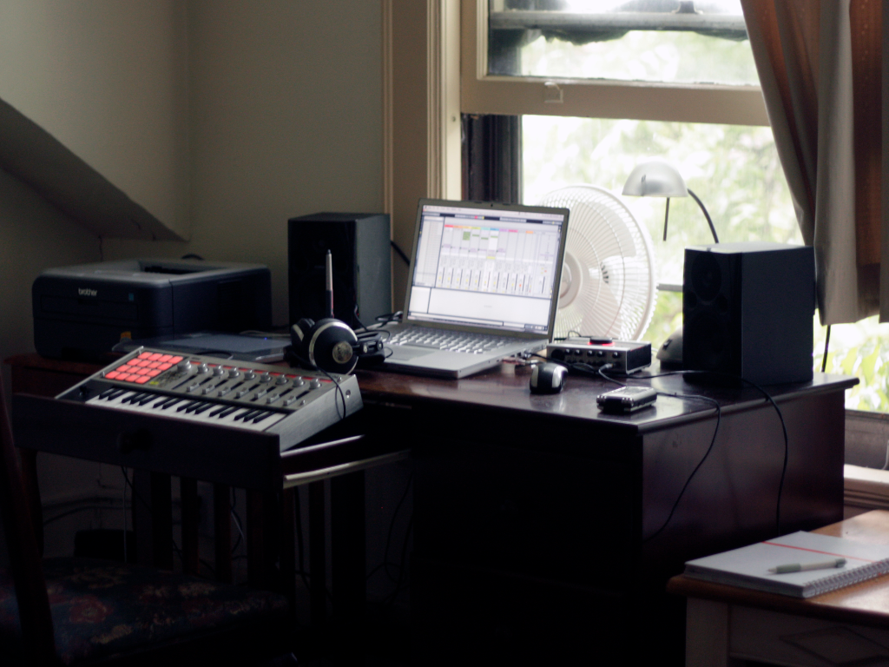

Hi there
My name is Daniil. I'm a graphic designer. I freelance and I move around a lot, so I made a habit of taking photos of my work places. Below you can see some of them.
- 


As a designer I enjoy visualising data the most. I think it is a great way to convey useful knowledge in an efficient manner. I’m an avid fan of charts, diagrams, maps, timelines. However, while doing the visualisation manually allows a great degree of creative freedom, it is hardly efficient. So my professional goal to learn to code is to get to know how to make interactive infographics.
There are of course personal goals as well. Anyone can benefit from writing working code, be it a businessman, a scientist, an artist, or political activist. We witness many examples of programming becoming indivisible from our everyday lives. Therefore it is vital for everyone to have coding skills so that they can take the power of programming into their hands and not depend entirely on solutions programmed by someone else. Programming should be a mandatory subject in schools worldwide, and I can imagine that a world of coders can fix many global problems and advance societies in an unprecedented way. I would like to be the part of that world.
I have been contemplating about getting into programming for quite a while, but I have been postponing doing anything about it because I felt intimidated by the vast body of knowledge this discipline requires. But finally at the end of 2018 I set a New Year resolution to learn to code. I joined the Harvard CS50 online course and applied to a 10-week Javascript course at City, University of London. Both were highly beneficial, but I quickly realised that learning something as complex as programming is much more rewarding in a group of fellow students rather than on my own. The City course introduced me to pair programming, and I figured that I have to find a group of people with similar aspirations if I want to move ahead. I started looking for coding camps in London and eventually came across Founders and Coders. I went to several meetups and got convinced that it is an amazing place to meet people, learn programming skills and, most importantly, grow together.